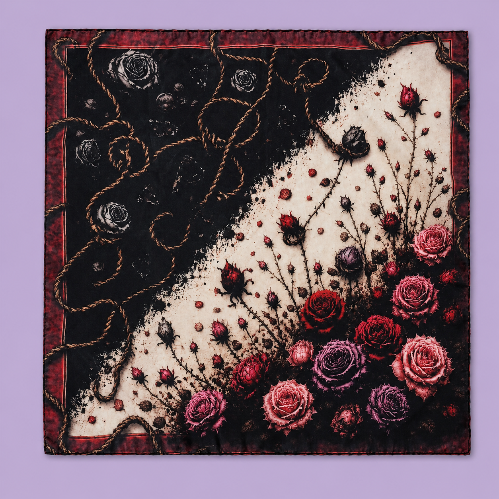
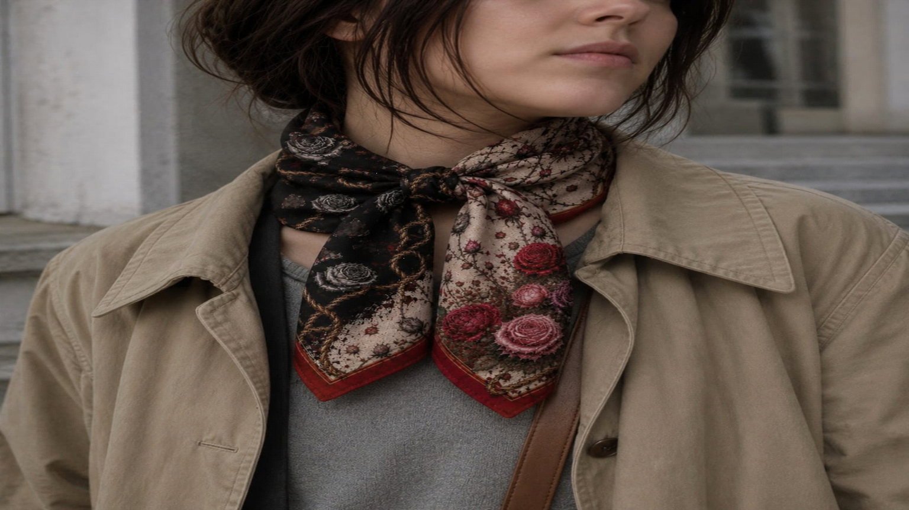
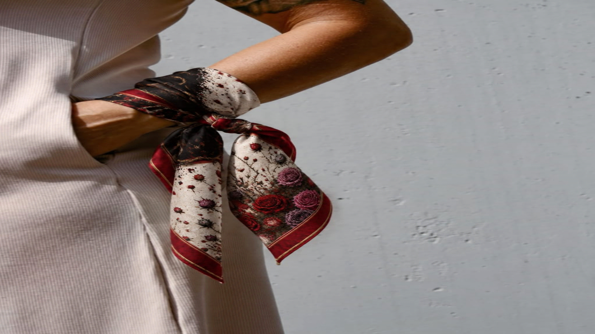
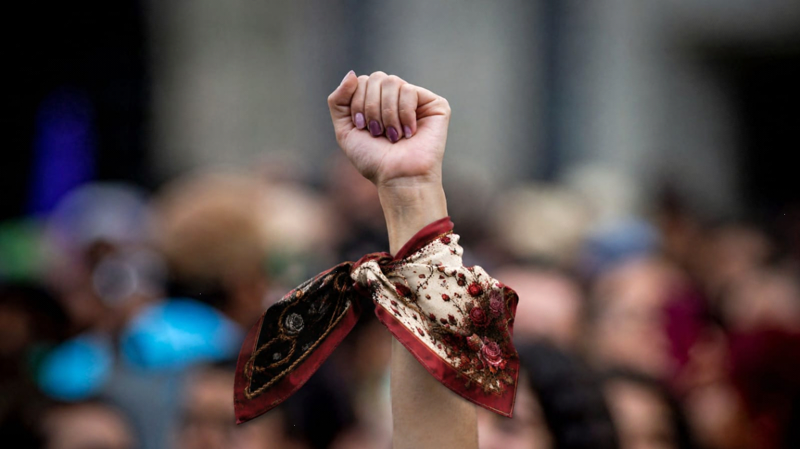

La propuesta del pañuelo
La propuesta surge a partir de una consigna académica vinculada con la violencia de género. Desde el primer momento, la estudiante reconoce que no podía abordarla solo desde una mirada externa, porque se trata de una problemática que también la atraviesa de manera personal y emocional.
Las primeras ideas aparecieron de forma espontánea, como imágenes que necesitaban ser contadas. Entre ellas se repitieron dos símbolos centrales: las rosas y el color negro. Desde esos elementos comenzó a construirse la narrativa visual del pañuelo.
Rosas, oscuridad y recorrido
Las rosas representan a las mujeres. Son símbolo de belleza, delicadeza y vida, pero también de espinas, fortaleza y resistencia. En el pañuelo aluden tanto a quienes atravesaron situaciones de violencia como a quienes siguen luchando por salir de ellas.
El negro simboliza una oscuridad emocional y psicológica: el proceso gradual mediante el cual una persona puede quedar atrapada en una relación violenta. La composición muestra ese tránsito desde flores coloridas y abiertas hacia flores inclinadas, pimpollos y ramas que se acercan a la zona oscura.
Las sogas que aprietan
Las sogas son uno de los elementos centrales de la composición. Pueden leerse de manera literal, en relación con formas extremas de violencia física, pero sobre todo representan el entramado invisible de la violencia psicológica y emocional.
Son vínculos que aprietan, condicionan, limitan y arrastran. El pañuelo busca representar esa sensación de quedar atrapada en algo que al principio parecía seguro y que, con el tiempo, se convierte en una prisión emocional.
Cicatrices, memoria y supervivencia
Las flores grises representan a quienes lograron escapar, pero no salieron indemnes. Aunque recuperaron su libertad, la experiencia dejó marcas: cicatrices invisibles y una pérdida temporal del brillo.
En contraste, las flores grises inmersas en la oscuridad recuerdan a las víctimas que no lograron salir: historias interrumpidas, voces silenciadas y vidas atrapadas en el ciclo de violencia.
Los fragmentos de vidrio roto completan la narrativa como símbolo de fragilidad emocional: la ruptura de la confianza, la autoestima y la seguridad. Una vez roto, el vidrio puede recomponerse, pero nunca vuelve a ser exactamente igual.
Galería del pañuelo




Propuesta realizada por Sofía Melisa Negro en el marco de Taller de Diseño III, orientación Textil, junto con el LAD (Laboratorio de Diseño).